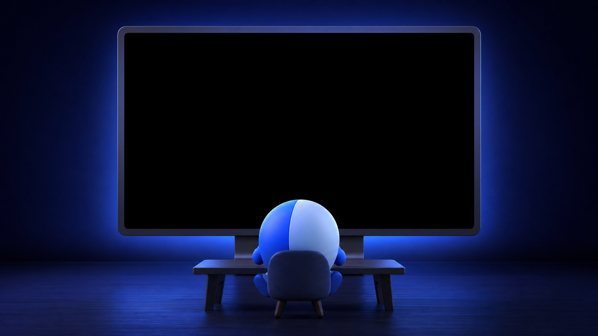
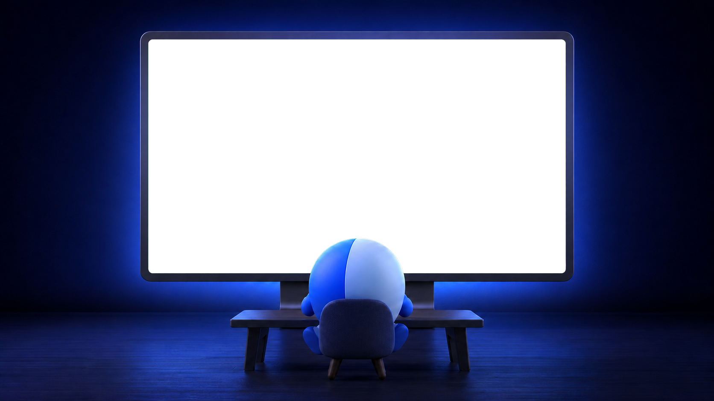

Tief hinein
Automatische Präzision hält feine Strukturen sichtbar, selbst wenn normale Zahlen längst an ihre Grenzen kommen.
Für Mac, iPhone, iPad & Apple Watch
Reise durch Mandelbrotwelten, finde überraschende Formen und verliere dich in Farben — flüssig gerendert und selbst bei erstaunlichen Tiefen noch präzise.
Läuft lokal. Ohne Account, Tracking oder Werbung.


Immer tiefer
Beauty of Fractals verbindet direkte Metal-Geschwindigkeit mit präzisen CPU-Deep-Zooms — und wählt automatisch den passenden Weg.
Automatische Präzision hält feine Strukturen sichtbar, selbst wenn normale Zahlen längst an ihre Grenzen kommen.
Wechsle Paletten, Potenzen und Formeln. Von Mandelbrot und Julia bis Burning Ship, Tricorn und 3D-Welten.
Speichere Lieblingsorte, synchronisiere sie über iCloud und behalte lange Renderings auf der Apple Watch im Blick.
Jede Reise ist anders
Jedes Bild entsteht direkt in der App. Tippe ein Motiv an, um es groß zu betrachten.
Private by design
Fraktalberechnung und PNG-Export laufen lokal auf deinem Gerät. Kein Konto, keine Werbung, keine Analyse-SDKs und kein Tracking.
Datenschutz im Detail →Beauty of Fractals